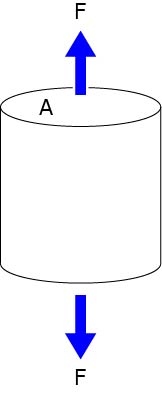
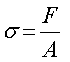
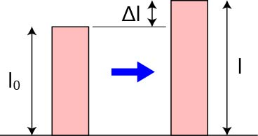
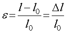
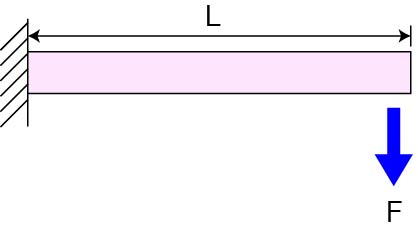
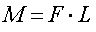

材料力学．．．．．．生命科学と何にも関係ない分野，のような気がしますが，タンパク質，ヌクレオチドだって立派な材料です．
ですので，材料力学もきちんと理解しましょう．
ただ．．．にわか勉強なので．．．．若干いい加減かもしれません．．．ご容赦を．．
参考にしたサイトは，
株式会社ストラクチャー
建築学生が学ぶ「構造力学」
CAE技術者のための情報サイト
などです，ありがとうございます．
まずは，材料力学の基礎となる用語を整理していきましょう．
・応力
応力とは，
単位面積あたりに作用する力
を指します．具体的には，

この図のようになります．数式で考えると，

となり，次元は，N/m2，となります．圧力の次元と一緒ですね（ヤング率も）．
・ひずみ
ひずみとは，
外力により形状が変化した場合のその割合
と考えることができます．

数式で表すと，

となります．このひずみ，ε，は無次元となります．
・ヤング率
さて，上記の，応力とひずみ，両者は大いに関係があります．
ある材料に力を加えたときのひずみが生じますが，このひずみの量が応力に比例する場合，弾性，と呼び，その比例係数を，ヤング率，と呼びます．
数式で表すと，
となります．σの次元は，N/m2，εの次元は無次元なので，ヤング率，E，の次元は，N/m2，となります．
・曲げモーメント
物質に与えられる力は，圧縮，伸張，だけではなく，曲げ，にも作用します．
そこで用いられる単語が，
モーメント
であり，荷重，と距離に依存します．

数式で表すと，

となり，次元は，Nm，となります．トルクと同じ次元ですね．
次ページから，
断面一次モーメント
断面二次モーメント
について説明していきます．